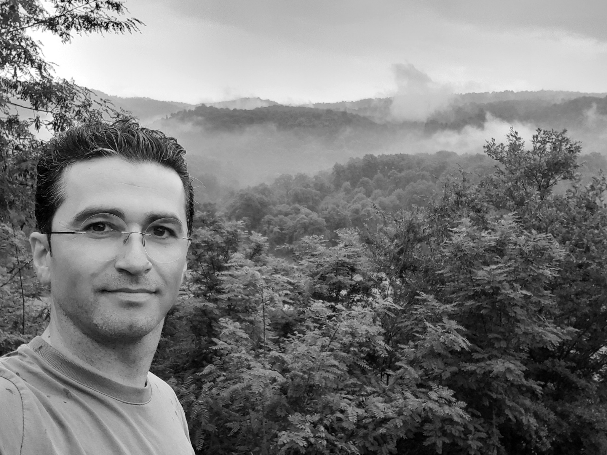
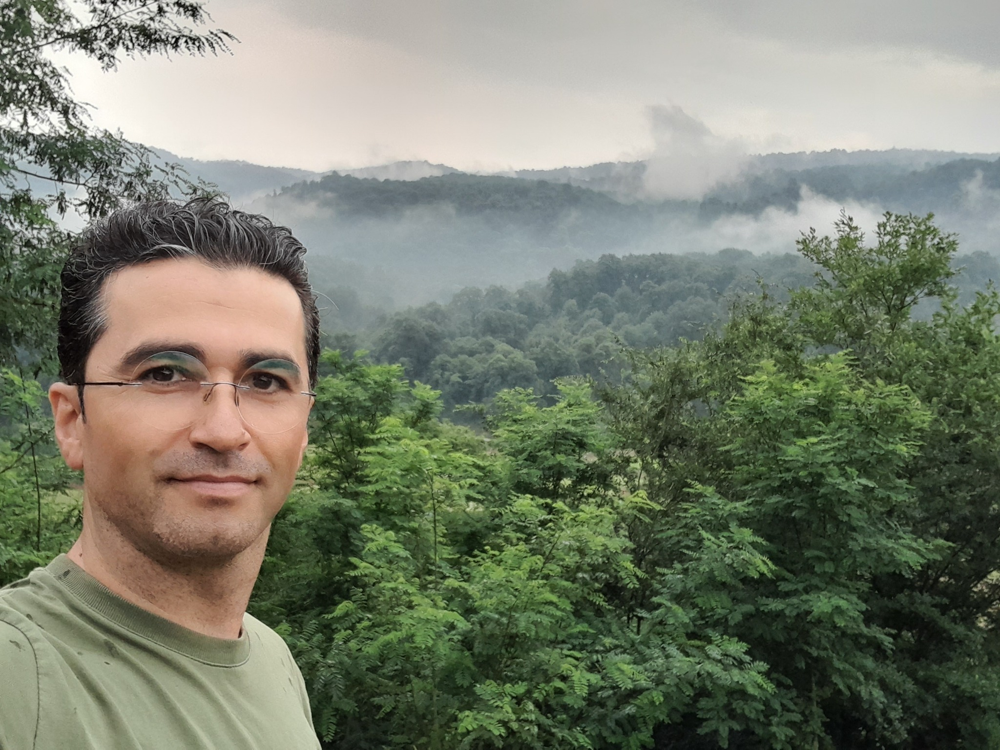

توصیه همیشگی مهندس محمود کاظمی به دوستان و عزیزان همراهش.....
طرز تفکری که صبر و استقامت را در زندگی حرفهای یک بنیانگذار معنا میبخشد.
باور به ساختن؛ حتی وقتی مسیر ساده نبود.
اینجا روایت انسانی است که سالها تلاش کرد، آزمود و ساخت؛ کسی که خلاقیت را نه یک ویژگی، بلکه راهی برای تبدیل ایده به واقعیت میدید.

اندیشه بنیانگذار
پیش از آنکه چیزی ساخته شود، باید کسی امکان ساختنش را ببیند.
این بخش به اندیشهها، خلاقیت، نگاه مهندسی و اصولی اختصاص پیدا میکند که محمود با آنها کار و زندگی میکرد.

02ساختن
از ایده تا واقعیت
پانزده سال تجربه، آزمون و ادامه دادن.
اینجا بعدها محصولات، طراحیها، دانش فنی، تصاویر کارگاه و نقاط مهم مسیر ساخت قرار میگیرند.
تصویر کارگاه / فرآیند ساخت
THE FOUNDER SPIRIT LIVES